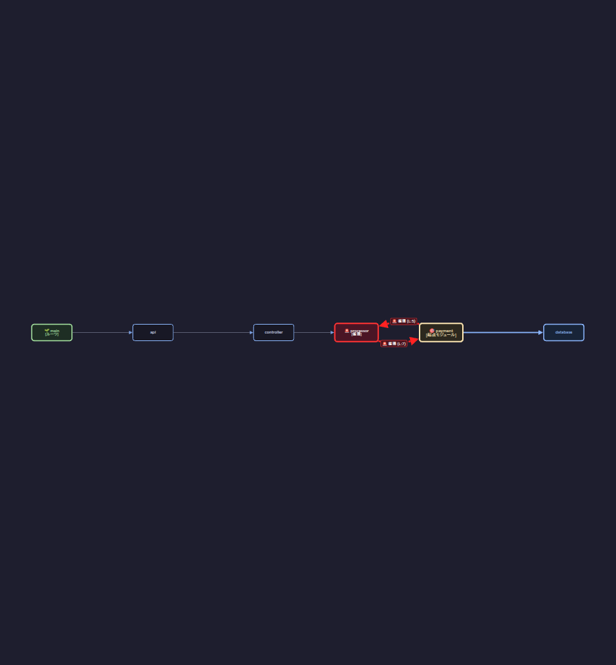

モジュール依存図を読む
「モジュール一覧」タブでは、Python プロジェクト内のモジュール間の依存・被依存関係をグラフィカルに確認できます。
画面構成
- ソースツリー (.py): 左側パネルに Python ファイルの一覧が表示されます。
- 依存グラフ領域: 中央に Cytoscape による依存関係図が表示されます。
- モジュール詳細: 右側パネルに選択中ノードのパス、LOC、依存・被依存モジュール一覧、行番号等が表示されます。

循環インポートの確認
直接の循環インポートや、下流の依存先で発生している循環インポートは、赤色バッジや警告表示、破線エッジ等によって視覚的に特定できます。
CLI によるモジュール図出力の例
ModuleLoom CLI の --mkdocs オプションにより抽出される Mermaid 形式の依存図例です。
flowchart LR
n0["app"]
n1["app.api"]
n2["app.common"]
n3["app.common.database"]
n4["app.common.logger"]
n5["app.common.utils"]
n6["app.config"]
n7["app.order"]
n8["app.order.controller"]
n9["app.order.export"]
n10["app.order.payment"]
n11["app.order.processor"]
n12["app.user"]
n13["app.user.activity"]
n14["app.user.auth"]
n15["app.user.router"]
n16["app.user.service"]
n17["app.user.session"]
n18["main"]
n1 --> n6
n1 --> n8
n1 --> n15
n3 --> n4
n8 --> n5
n8 --> n11
n10 --> n3
n10 --> n11
n11 --> n3
n11 --> n5
n11 --> n10
n14 --> n5
n14 --> n17
n15 --> n16
n16 --> n3
n16 --> n14
n16 --> n17
n17 --> n3
n17 --> n5
n17 --> n14
n18 --> n1
n18 --> n4
n18 --> n6